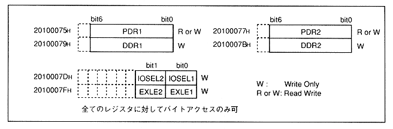

Register for controlling the peripheral interface in SMPC.
Figure 1.4 shows the address map of the parallel I / O register.
Note that the write-only register cannot be read.
Figure 1.4 Parallel I / O register address map

DDR1 (W): Data Direction Register 1
7-bit register that sets the input / output direction of peripheral port 1 (P1) in bit units. When "0" is written to each bit, it is set to input, and when "1" is written, it is set to output. Byte access from SH-2.
DDR2 (W): Data Direction Register 2
7-bit register that sets the input / output direction of peripheral port 2 (P2) in bit units. When "0" is written to each bit, it is set to input, and when "1" is written, it is set to output. Byte access from SH-2.
Table 1.3 DDR functions
bit
function
0
Set to input (default)
1
Set to output
PDR1 (R or W): Port Data Register 1
PDR1 is a 7-bit register that stores the data of peripheral port 1 (P1). Whether each bit of PDR1 is an input port or an output port depends on the DDR1 setting. By writing data to this register, the pin status of the port set as output can be changed. By reading this register, the pin status of the port set as input can be read. Also, the port set for output is not the pin state, but written to PDR1